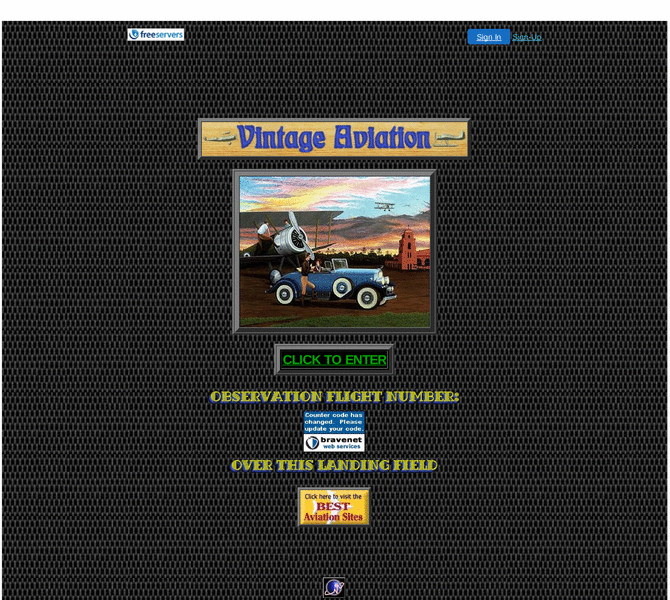

Previewing: Vintage Aviation Previewing: Vintage Aviation 
Use the left/right red arrow controls to navigate through this ring - Click the preview image to visit the member site.

A site dedicated to the Golden Age of Aviation. Original documents and images from the 1930’s.
Vintage Aviation owned by:
 dr1fokker dr1fokker
A member of the original webring since 05/27/2003.
|
|